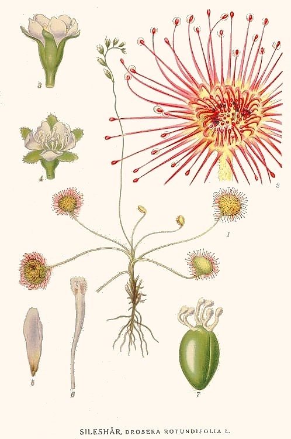
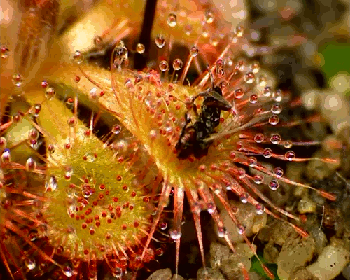
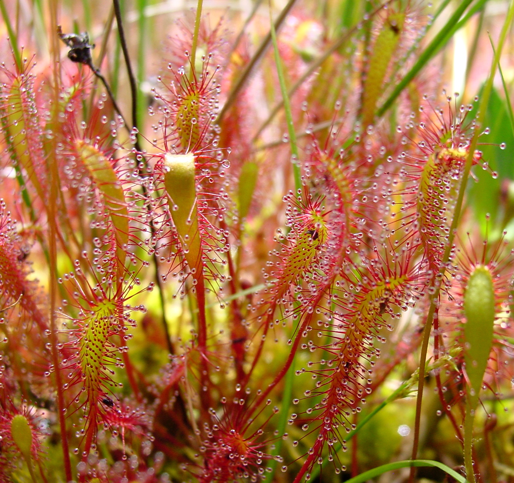

|

A botanical illustration of a Drosera rotundifolia plant, including roots, leaves and inflorescence |
IntroductionThe sundews, known as Drosera in scientific literature, are a genus of plants, with at least 194 different species. Sundew species can be found across the globe - on all continents except for Antarctica. Sundews are carnivorous plants - they derve a large part of their necessary nutriens by consuming animals, typically bugs, that they catch with the mucous on their leaves. The sticky substance is secreted on their leaves in little glassy beads, giving them their common English name - sundews. Likewise, their Latvian name "rasene"" also references this characteristic. Like many other carnivorous plants, sundews are found primarily in nutrient-poor habitats - marshes, swamps and other waterlogged places. They can survive in these environments because of their carnivory, or, perhaps, evolved carnivory to survive there. Even Charles Darwin, who expermented much with one of the sundew species Drosera rotundifolia, admitted in a letter to a friend: "…at the present moment, I care more about Drosera than the origin of all the species in the world." |
|

A sundew captures and later slowly digests its prey with its leaves. |
CarnivoryThe defining feature of the Drosera genus is its carnivory - the ability to not only attract and trap, but also digest prey, usually small insects and other invertebrates. The main adaptations that make this possible are:
The hair-like tentacles of sundews are extremely sensitive and even mobile. Not only can they sense that a prey has touched them, they will also bend towards the center of the leaf in response, pushing the would-be dinner towards ever more tentacles. Today, botanists recognize many carnivorous plant species, most of them not belonging to the Drosera genus, but representing a diverse group of otherwise not closely related genera and families, such as the pitcher plants (Nepenthes spp. and Heliamphora spp, among others) or the dramatic Venus flytrap (Dionaea muscipula). These plants employe a diverse range of strategies to attract and ensnare their meals. However, it was the relatively inconspicuous sundew, which was extensively studied by European botanists in the 19th century, that lead to the recognition of the fact of carnivory itself - plant do indeed derive nutrition from they prey and they are not just victims to unfortunate accidents. |
|

Drosera anglica, one of the sundew species found in Latvia |
Sundews in LatviaWith Drosera genus having so many species and a cosmopolitan distribution, it is no wonder that a few of them are found also in Northeastern Europe, including Latvia.
|
Further readingFor more information on the Drosera genus:
|